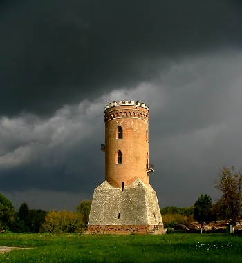

Obiective Culturale Dâmbovița
Turnul Chindiei
Turnul Chindiei, este un turn construit în secolul al XV-lea, în Târgoviște, care face parte din ansamblul de monumente Curtea Domnească. Turnul a fost construit de către domnitorul Vlad Țepeș, în timpul celei de-a doua domnii, inițial pentru scopuri militare, clădirea servind drept punct de pază, foișor de foc, dar și pentru stocarea tezaurului. Actualmente, clădirea măsoară 27 de metri în înălțime și 9 metri în diametru. Între anii 1847 și 1851, turnul a fost complet restaurat de către domnitorul Gheorghe Bibescu, forma actuală datorându-se acestuia, inclusiv înălțarea sa cu circa 5 metri față de construcția inițială.
Turnul Chindiei este cea mai importantă atracție turistică din oraș și totodată simbolul orașului, elemente specifice edificiului fiind prezente pe stema orașului, în partea de sus, dar și în partea de jos. Fiind un monument istoric, clădirea găzduiește acum o expoziție de documente, arme și obiecte care au aparținut lui Vlad Țepeș. Din punct de vedere administrativ, Turnul Chindiei se află sub tutela Complexului Național Muzeal „Curtea Domnească” Târgoviște.
Istoric
Nu se știe cu exactitate de când datează Curtea Domnească, dar ceea ce este cert este faptul că exista o casă domnească la sfârșitul secolului al XIV-lea, în timpul domniei lui Mircea cel Bătrân, însă prima mențiune documentară a Curții domnești din Târgoviște datează din 1403, iar mai apoi în 1409. Se bănuiește că se inițiaseră lucrări de construcție la Curtea Domnească din prima domnie a lui Vlad Țepeș, dar care rămăseseră neterminate. Săpăturile arheologice de la jumătatea secolului al XX-lea au arătat că Turnul Chindiei datează din a doua jumătate a secolului al XV-lea, putând fi identificat cu acel „castel” pe care Ștefan Báthory l-a văzut la 11 noiembrie 1476.
Pe la mijlocului secolului al XIX-lea, Turnul Chindiei a fost renovat, dar înainte de aceasta desenatorul francez Michel Bouquet a reușit să-l surprindă în anul 1840. Ultimele lucrări importante de restaurare a interiorului au fost începute în anul 1961 de către Direcția monumentelor istorice, încercându-se reconstituirea și conservarea monumentului.
Arhitectură
Turnul domină ansamblul monumentelor ale Curții Domnești dinspre nord-vest. Datând din secolul al XV-lea, construcția a suferit câteva modificări, necunoscându-se forma inițială a turnului. Cu toate acestea, desenul lui Bouquet din 1840 înfățișează turnul mult mai scund decât este acum și cu baza piramidală din cărămidă, demonstrând că refacerea sa nu avusese loc încă.
Turnul a fost ridicat peste pridvorul bisericii-paraclis construită de Mircea cel Bătrân care însă acum nu mai păstrează decât urme ale zidurilor altarului și naosului. Pronaosul se află sub actualele ziduri ale Turnului Chindiei. În manuscrisul latin de la Biblioteca Bathyaneum din Alba Iulia se menționează că:
În partea de nord se vede un turn înalt unde erau închisorile și lângă el, îndată, un paraclis mic unde principele cu partea femeiască cercetau sfânta slujbă la vreme potrivită...